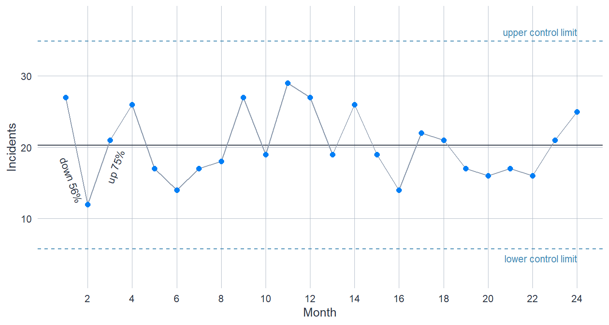
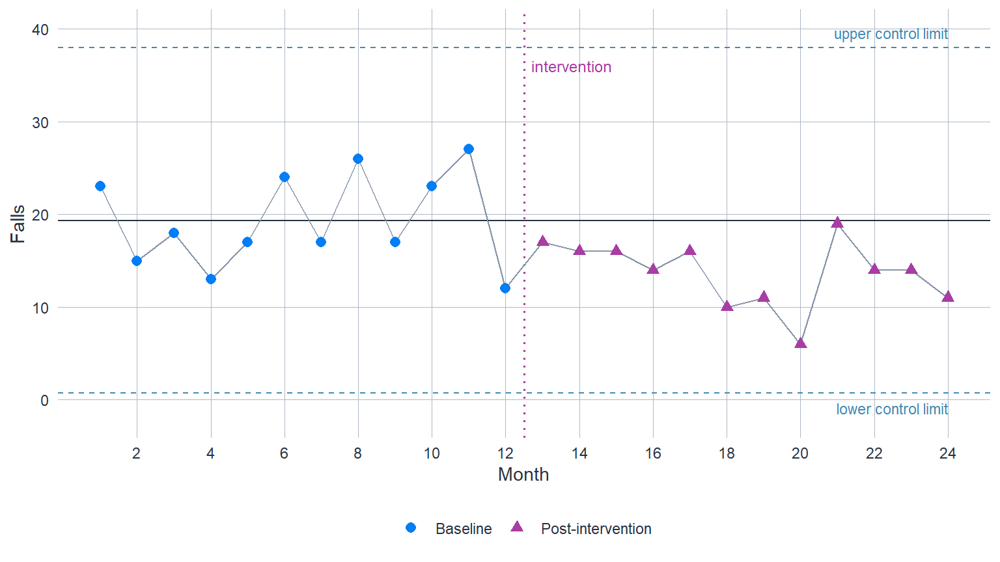
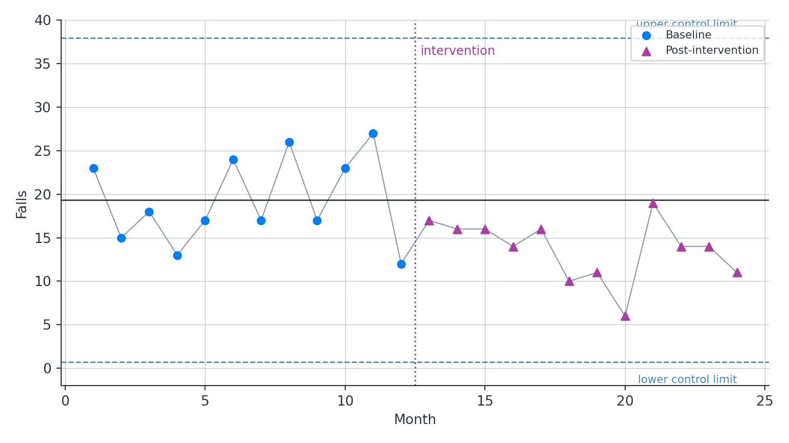

13 Monitoring Trends Over Time: SPC Basics
13.1 Two Kinds of Variation
Every measure that matters to a regulator moves from month to month. Falls counts, waiting times, complaint volumes – none of them sits still, and most of the movement means nothing. The discipline SPC brings is a vocabulary for that fact, inherited from Walter Shewhart’s work in 1920s manufacturing and now standard across healthcare improvement. Common cause variation is the routine, expected fluctuation a stable process produces on its own: no single month’s wobble has an explanation, because the explanation is the process – many small influences, summing differently each month, within a predictable range. Special cause variation is different in kind: something identifiable has changed – a new manager, an outbreak, a rota collapse, a data error – and the measure has moved outside, or patterned itself against, its own routine. The first kind of variation is to be expected and tolerated; the second is to be found and explained.
The distinction matters because each mistake about it has a cost. Read common cause as special – chase every up-tick, demand an explanation for every bad month – and you waste investigative effort on noise, erode trust in the data, and pressure providers into explaining randomness, which teaches them to invent stories. Acting on noise even has a name in the SPC tradition, tampering, and Deming’s demonstration that it makes a process more variable rather than less is one of the field’s founding results. Read special cause as common – wave away a real deterioration as “just variation” – and a problem runs on unexamined. You cannot eliminate both mistakes; what a control chart does is set an explicit, statistically grounded boundary that balances them, instead of leaving each month’s judgement to whoever is reading the dashboard.
The everyday alternative is worse than it looks. Comparing this month to last month – the logic of every up/down arrow and most red-amber-green ratings – is a two-point comparison, and two points from a stable process can easily differ by half their value. The picture below makes the point with simulated data from a process in which nothing changes at all.
A control chart is the tool that operationalises the distinction. It plots the measure in time order around a centre line (the process mean) and two control limits, conventionally set three standard deviations of the process’s own short-term variation above and below the centre. While the process is stable, almost every point – about 99.7 per cent, when the data are roughly normal – will fall inside the limits, so a point outside them is a rare event under stability: not proof that something changed, but strong grounds to investigate. The limits are calculated from the data’s own behaviour, which is the crucial difference from a target or specification line: a control chart tells you what the process is actually doing, not what anyone wishes it were doing.
13.2 Before You Start
Data requirements. You need a measure recorded in consistent time order – the same definition, collected the same way, at reasonably regular intervals (weekly, monthly, quarterly). Control limits calculated from fewer than about 12 points are provisional at best; 15–20 baseline points make them trustworthy. Complete the usual data-quality checks first (the chapter on quality assurance sets out the pre-analysis questions), and be alert to definition changes mid-series: if what “an incident” means changed in April, the chart cannot bridge April.
The question must be longitudinal. SPC follows one process – a provider, a service, a system – through time. To compare many providers against each other at one point in time, use z-scoring and funnel plots; the two methods are complementary, not interchangeable.
When SPC is not the right tool. Very short series (a handful of points) cannot support limits; deeply seasonal or strongly autocorrelated data (daily attendances, say) violate the independence the basic charts assume and need adjustment first; and a one-off before/after comparison with no ongoing stream may be better served by a designed two-group comparison.
QA framework alignment. SPC most directly supports QA question 3 (Analysis – is the method appropriate and correctly applied?) and question 4 (Delivery and Communication – does the chart communicate the finding clearly?). Document the chart type, the baseline period behind the limits, and any recalculations as part of the question 3 record.
Worked examples for this chapter. Example 2: Care Home Falls Monitoring builds an I-chart around an intervention; Example 6: Ambulance Handover Delays handles trend and seasonality in a longer series.
The code below uses pseudo-randomly generated data. The Python tabs read the R-generated dataset via r.falls_data so both languages show identical numbers; commented-out code shows how to generate the data in Python independently.
13.3 Choosing the Right Chart
The right chart follows from the type of data you hold, because the limits must reflect how that kind of data naturally varies:
| Your measure | Chart | Limits based on |
|---|---|---|
| Continuous values, one per period (mean waiting time, average length of stay) | I-chart (individuals chart) | the average month-to-month moving range |
| Proportions or percentages (% seen within target) | P-chart | the binomial distribution; limits widen when the denominator shrinks |
| Counts of events, opportunity roughly constant (complaints per quarter) | C-chart | the Poisson distribution |
| Rates with a varying denominator (falls per 1,000 bed-days when occupancy moves) | U-chart | the Poisson distribution, scaled by each period’s denominator |
In practice the I-chart covers more ground than the table suggests. Healthcare SPC tutorials – Mohammed and colleagues’ is the standard reference – recommend it as the robust default even for many proportions and rates, provided denominators are large and reasonably stable, because it estimates variation from the data’s own behaviour rather than from a distributional assumption that real data often violate. If you are unsure, start with the I-chart; switch to P/C/U when small or shifting denominators make period-specific limits genuinely necessary.
13.4 Step-by-Step Guide: Building an I-chart
Step 1: Plot the raw series first
Before any limits, plot the data in time order and look. Obvious trends, seasonality, sudden level shifts, and suspect values are all easier to see on a plain run of points than to infer from summary statistics – and each one affects whether, and over what baseline, limits make sense.
Step 2: Choose the baseline period
The limits should describe the process as it routinely behaves, so calculate them from a stretch of data you believe to be stable – the baseline – and not across a known change. If you are assessing an intervention, the baseline is the pre-intervention period; the limits are then frozen and extended forwards, and the post-intervention data are judged against them. Calculating limits across the whole series, change included, smears the change into the limits and hides it.
Step 3: Calculate the centre line and control limits
The centre line is the mean of the baseline observations. The limits need an estimate of the process’s short-term variation, and the I-chart gets it from the moving range – the absolute difference between each pair of consecutive points:
\[\text{UCL} = \bar{x} + 2.66\,\overline{\text{MR}}, \qquad \text{LCL} = \bar{x} - 2.66\,\overline{\text{MR}}\]
where \(\bar{x}\) is the baseline mean and \(\overline{\text{MR}}\) is the mean of the moving ranges. In words: take the average jump between consecutive months, multiply by 2.66, and place the limits that far either side of the mean. (The constant converts an average moving range into three standard deviations’ worth of individual-point variation; it comes from the statistics of ranges, not from anything you tune.) Using consecutive differences is what makes the I-chart robust: a slow trend or a step change inflates the overall standard deviation but barely touches the typical month-to-month jump, so the limits stay honest about routine variation. If the lower limit falls below zero for a measure that cannot be negative, draw it at zero.
Step 4: Apply the detection rules
A point outside the limits is the headline rule, but a process can change without ever breaching them – a modest sustained shift moves every point a little, not one point a lot. Pattern rules catch this. The compact set used across NHS practice:
- Outside the limits: any single point beyond the UCL or LCL.
- Shift: a run of 8 consecutive points on the same side of the centre line (some implementations use 7).
- Trend: 6 or more consecutive points all rising or all falling.
Each rule is calibrated to be rare under stability, so any of them firing is grounds to investigate. A larger battery of rules exists – the Overthinking box below sets out the trade-off – but these three carry most of the practical value.
Step 5: Interpret, act, and only then recalculate
Random scatter inside the limits with no rule firing means the process is stable: leave it alone, and resist the monthly demand for a narrative about noise. A signal means investigate – find what changed, around when the rule fired. And only once a change is confirmed, explained, and sustained should you recalculate the limits on the new level, so that monitoring continues against the process as it now is. Recalculating routinely, every time a point is added, defeats the chart: the limits exist precisely to stay still while the data move.
13.5 Worked Example: Care Home Falls Programme
Scenario: a 60-bed nursing home has recorded monthly falls for two years. At the start of month 13 it introduced a falls prevention programme – sensor mats, medication review, strengthened night cover. Did the programme work, and is the improvement holding?
Because the data are simulated, we know the answer in advance: the true underlying rate falls from 18 to 13 falls per month at month 13 – a real but undramatic reduction, about 28 per cent. Watch how it shows up on the chart: not as any single alarming point, but as a pattern.
Set up the data
# Simulated data for illustration (seed for reproducibility).
# True rate: 18 falls/month for months 1-12, 13/month from month 13.
set.seed(42)
falls_data <- data.frame(
month = 1:24,
falls = c(rpois(12, lambda = 18), rpois(12, lambda = 13)),
phase = rep(c("Baseline", "Post-intervention"), each = 12)
)
head(falls_data, 3) month falls phase
1 1 23 Baseline
2 2 15 Baseline
3 3 18 Baselineimport pandas as pd
import numpy as np
# Use the R-generated data so both tabs show identical numbers
falls_data = r.falls_data
# To generate independently in Python instead:
# rng = np.random.default_rng(42)
# falls_data = pd.DataFrame({
# "month": range(1, 25),
# "falls": np.concatenate([rng.poisson(18, 12), rng.poisson(13, 12)]),
# "phase": ["Baseline"] * 12 + ["Post-intervention"] * 12,
# })
falls_data.head(3) month falls phase
0 1 23 Baseline
1 2 15 Baseline
2 3 18 BaselineCalculate baseline limits and freeze them
The question is whether the process changed at month 13, so the limits come from the baseline year only, and the post-intervention months are judged against them.
baseline <- falls_data$falls[falls_data$phase == "Baseline"]
centre <- mean(baseline)
mr_bar <- mean(abs(diff(baseline))) # average month-to-month jump
ucl <- centre + 2.66 * mr_bar
lcl <- max(0, centre - 2.66 * mr_bar) # falls cannot be negative
cat("Centre line:", round(centre, 1), "falls/month\n")Centre line: 19.3 falls/monthcat("Control limits:", round(lcl, 1), "to", round(ucl, 1), "\n")Control limits: 0.7 to 38 baseline = falls_data.loc[falls_data["phase"] == "Baseline", "falls"]
centre = baseline.mean()
mr_bar = baseline.diff().abs().mean() # average month-to-month jump
ucl = centre + 2.66 * mr_bar
lcl = max(0, centre - 2.66 * mr_bar) # falls cannot be negative
print(f"Centre line: {centre:.1f} falls/month")Centre line: 19.3 falls/monthprint(f"Control limits: {lcl:.1f} to {ucl:.1f}")Control limits: 0.7 to 38.0Draw the chart
source("../R/theme_cqc.R")
library(ggplot2)
ggplot(falls_data, aes(month, falls)) +
geom_hline(yintercept = centre, colour = cqc_ink, linewidth = 0.5) +
geom_hline(yintercept = c(ucl, lcl), linetype = "dashed",
colour = "#4289B3", linewidth = 0.5) +
geom_vline(xintercept = 12.5, linetype = "dotted",
colour = "#A83DA4", linewidth = 0.6) +
geom_line(colour = cqc_muted, linewidth = 0.4) +
geom_point(aes(colour = phase, shape = phase), size = 2.4) +
scale_colour_manual(values = c("Baseline" = "#007EF5",
"Post-intervention" = "#A83DA4"),
name = NULL) +
scale_shape_manual(values = c("Baseline" = 16, "Post-intervention" = 17),
name = NULL) +
annotate("text", x = 12.7, y = 36, label = "intervention",
colour = "#A83DA4", size = 3.2, hjust = 0) +
annotate("text", x = 24, y = ucl + 1.6, label = "upper control limit",
colour = "#4289B3", size = 3, hjust = 1) +
annotate("text", x = 24, y = lcl - 1.6, label = "lower control limit",
colour = "#4289B3", size = 3, hjust = 1) +
scale_x_continuous(breaks = seq(2, 24, 2)) +
coord_cartesian(ylim = c(-2, 40)) +
labs(x = "Month", y = "Falls") +
theme_cqc() +
theme(legend.position = "bottom")
import sys
sys.path.insert(0, "../python")
import matplotlib.pyplot as plt
from cqc_style import apply_cqc_style, CQC_INK, CQC_MUTED
apply_cqc_style()
base = falls_data[falls_data["phase"] == "Baseline"]
post = falls_data[falls_data["phase"] == "Post-intervention"]
fig, ax = plt.subplots(figsize=(8, 4.5))
ax.axhline(centre, color=CQC_INK, linewidth=1)
ax.axhline(ucl, color="#4289B3", linestyle="--", linewidth=1)
ax.axhline(lcl, color="#4289B3", linestyle="--", linewidth=1)
ax.axvline(12.5, color="#A83DA4", linestyle=":", linewidth=1.2)
ax.plot(falls_data["month"], falls_data["falls"], color=CQC_MUTED,
linewidth=0.8, zorder=1)
ax.scatter(base["month"], base["falls"], color="#007EF5", marker="o",
s=30, label="Baseline", zorder=3)
ax.scatter(post["month"], post["falls"], color="#A83DA4", marker="^",
s=35, label="Post-intervention", zorder=3)
ax.text(12.7, 36, "intervention", color="#A83DA4", fontsize=9)
ax.text(24, ucl + 1.2, "upper control limit", color="#4289B3",
fontsize=8, ha="right")
ax.text(24, lcl - 2.4, "lower control limit", color="#4289B3",
fontsize=8, ha="right")
ax.set_xlabel("Month")
ax.set_ylabel("Falls")
ax.set_ylim(-2, 40)(-2.0, 40.0)ax.legend(loc="upper right", fontsize=8)
plt.tight_layout()
plt.show()
Read the signal
post <- falls_data$falls[falls_data$phase == "Post-intervention"]
# Outside-the-limits rule: any post-intervention month beyond the limits?
cat("Months beyond the limits:", sum(post > ucl | post < lcl), "\n")Months beyond the limits: 0 # Shift rule: how long is the run below the centre line?
cat("Consecutive months below the centre line:", sum(post < centre), "\n")Consecutive months below the centre line: 12 # Size of the change
cat("Baseline mean:", round(centre, 1),
"- post-intervention mean:", round(mean(post), 1),
"- reduction:", round(centre - mean(post), 1), "falls/month\n")Baseline mean: 19.3 - post-intervention mean: 13.7 - reduction: 5.7 falls/monthpost = falls_data.loc[falls_data["phase"] == "Post-intervention", "falls"]
# Outside-the-limits rule: any post-intervention month beyond the limits?
print(f"Months beyond the limits: {((post > ucl) | (post < lcl)).sum()}")Months beyond the limits: 0# Shift rule: how long is the run below the centre line?
print(f"Consecutive months below the centre line: {(post < centre).sum()}")Consecutive months below the centre line: 12# Size of the change
print(f"Baseline mean: {centre:.1f}"
f" - post-intervention mean: {post.mean():.1f}"
f" - reduction: {centre - post.mean():.1f} falls/month")Baseline mean: 19.3 - post-intervention mean: 13.7 - reduction: 5.7 falls/monthThe outside-the-limits rule never fires: monthly falls counts are noisy, so the baseline limits are wide, and a 28 per cent reduction is not large enough to push any single month past them. If “points outside the limits” were your only rule, you would conclude nothing had happened – and you would be wrong. The shift rule tells the real story: twelve consecutive months below the centre line, against the eight that stability would essentially never produce. The reduction is genuine, sustained, and roughly five to six falls a month.
Two pieces of honesty belong in the write-up. First, the chart establishes that the process changed at about the right time – it cannot establish that the programme caused the change; a chart is not a designed evaluation, and winter occupancy, a changed resident mix, or recording practice could each move the same line. Corroborate before celebrating. Second, now that the shift is confirmed and explained, recalculate the limits from the post-intervention months and monitor against the new level – the old limits answered “did it change?”; the new ones answer “is it holding?”.
13.6 Documenting Your Analysis
For QA purposes, record: what you measured, over what period, and any exclusions; the chart type and why it suits the data type; the baseline period the limits were computed from; the detection rules in use; every signal and what investigation concluded; and every recalculation of the limits, with the confirmed change that justified it. Limits and rules are method choices like any other – the Code of Practice’s sound-methods obligations apply, and a chart whose limits cannot be reproduced is not evidence.
13.8 When to Seek Support from the Guild
Raise your analysis with the Quantitative Analytics and Statistics Guild (the Guild) at a Quant Clinic session when: the data are autocorrelated or strongly seasonal (daily series especially); denominators are very large and P/U limits flag everything (overdispersion); you need faster detection of small persistent shifts (CUSUM charts, which accumulate deviations from a target, or EWMA charts, which weight recent observations – both more sensitive and harder to read than Shewhart charts); the monitoring needs risk adjustment for case-mix; several changes overlap and you need to date them; or rare events make counts mostly zero (specialised chart types exist).
13.9 Further Reading
Internal CQC resources
- The QA Framework sets the documentation standards for SPC analyses; see How to Use This Book for how to access support.
Practical guidance
- Mohammed, M.A., Worthington, P. & Woodall, W.H. (2008). “Plotting basic control charts: tutorial notes for healthcare practitioners.” Quality and Safety in Health Care, 17(2), 137–145. (The standard short tutorial; source of the XmR-as-default advice.)
- Provost, L.P. & Murray, S.K. (2011). The Health Care Data Guide: Learning from Data for Improvement. Jossey-Bass. (The comprehensive reference for chart selection and improvement use.)
- NHS England – Making Data Count and the SPC tool. (Templates and board-reporting practice across the NHS.)
Method and evidence
- Thor, J. et al. (2007). “Application of statistical process control in healthcare improvement: systematic review.” Quality and Safety in Health Care, 16(5), 387–399.
- Benneyan, J.C. (1998). “Statistical quality control methods in infection control and hospital epidemiology, Part I.” Infection Control and Hospital Epidemiology, 19(3), 194–214.
- Sherlaw-Johnson, C. & Bardsley, M. (2016). Monitoring change in health care through statistical process control methods. Nuffield Trust. (SPC for system-level change; overdispersion and CUSUM/VLAD comparisons.)
- HM Treasury (2015). The Aqua Book: guidance on producing quality analysis for government.